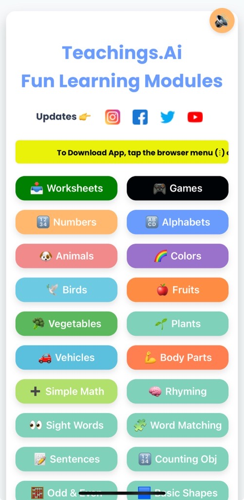
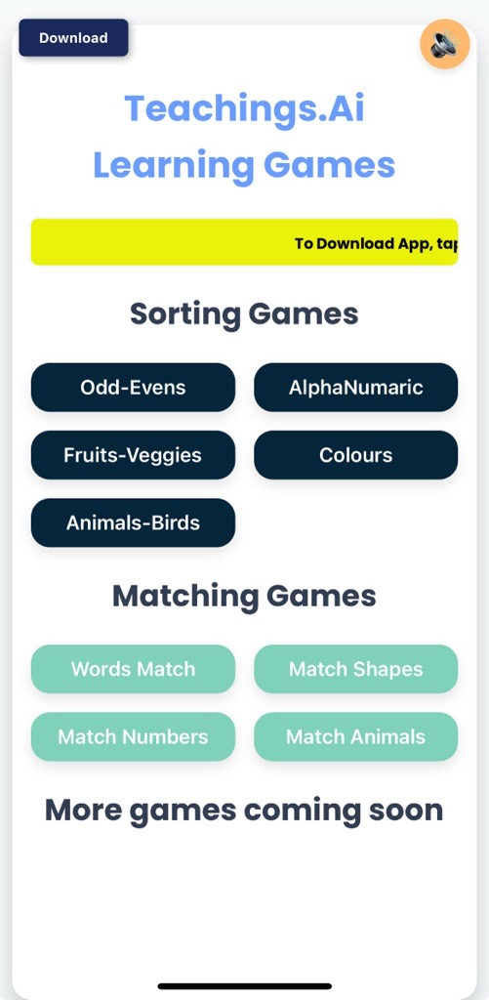
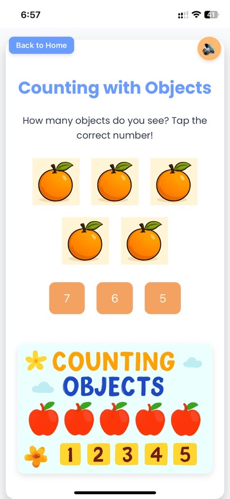
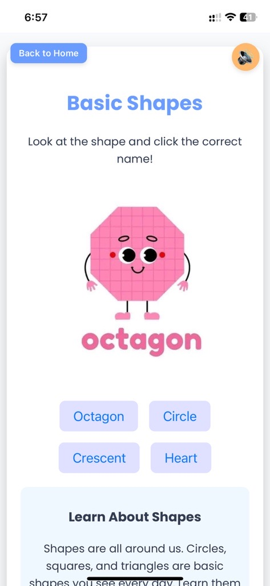

Welcome to Teachings.AI – The Best Free Preschool Learning Games
We’re excited to introduce Teachings.AI, a safe and engaging platform where kids learn while they play. Designed for toddlers, preschoolers, and kindergarten students, our free online games and printable worksheets are perfect for building early math, reading, grammar, and problem-solving skills.
🎯 Why Parents & Teachers Love Teachings.AI
- Improves core skills in numbers, letters, shapes, and vocabulary.
- Boosts memory, focus, and motor skills with hands-on drag-and-drop games.
- Works on any device — phone, tablet, or desktop.
- Ideal for homeschooling, classroom activities, and after-school learning.
- No sign-up needed — safe, ad-free, and child-friendly.
✨ Educational Games Your Child Will Love
- Number & Alphabet Sorting – Learn to recognize and arrange letters and numbers.
- Counting Games – Practice numbers with cute animals and colorful objects.
- Grammar Fun – Understand nouns, verbs, and simple sentence building.
- Matching Games – Match fruits, vegetables, animals, and shapes to boost vocabulary.
- Patterns & Sequences – Improve logical thinking and problem-solving skills.
📸 Preview – Teachings.AI in Action




🚀 How to Start Learning on Teachings.AI
- Visit Teachings.ai from your device.
- Choose a learning category — Alphabet Games, Counting Objects, Grammar, etc.
- Play instantly or download a free worksheet for offline fun.
- On mobile, tap “Add to Home Screen” for app-like quick access.
🌟 Why Early Learning Matters
Studies show that interactive educational games help children develop stronger cognitive, language, and problem-solving skills. Teachings.AI was built to support both parents and educators in making learning more engaging, accessible, and fun.
With Teachings.AI, your child can explore, play, and grow in a safe online environment — and the best part? It’s completely free!